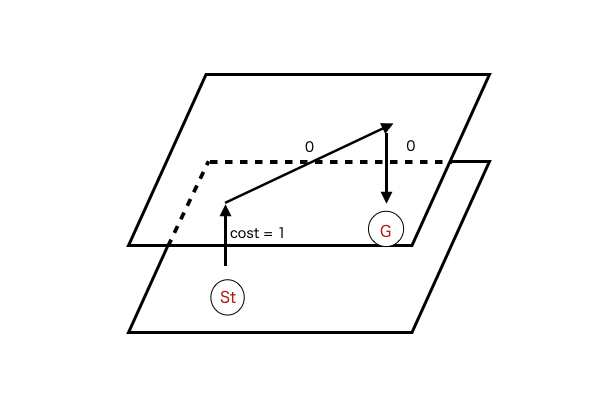

前のページ
本日はABC246に参加しました。
A,B,C問題と順調に解いて、Dもまあ普通に解けたのですが、E問題で謎のバグが発生し、何でこれで通るのか説明をつけれないまま通していました。
E問題は、頂点を３倍して、コスト0の辺を張る最短経路問題でした。

このように、コスト0の移動は別の次元で行い、元の次元と移動のための次元の往復をコスト1で行えば良いです。
まあここは普通に実装できたのですが、01BFSをするときにdistの更新のタイミングがよくなかったみたいで、本来最短なはずのpathが枝刈りを食らっているような状態でした。
本番中はそのことに気づかず、図の上に登る辺をコスト０にして、下に降りる辺をコスト１にしたら通りました(めちゃくちゃ運が良かった)。